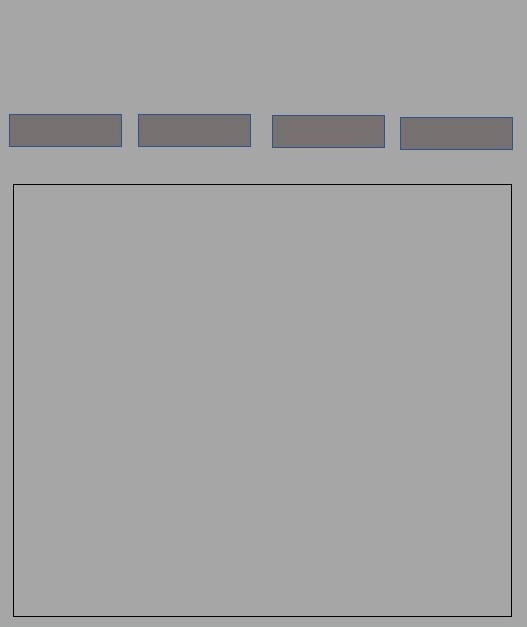

Alapvetően nem is terveztem bonyolultra magát a weblapot emiatt, hanem próbáltam valami egyszerű megvalósításnál megmaradni. Végül változtattam menüpontok elhelyezkedésén, illetve ahol tudtam ott egy kicsit a megjelenésen(pl.: keret, hattérszín)
Nehézségek az elején voltak, amíg hirtelen nem tudtam, hogyan is kéne neki kezdjek, hiszen mint említettem nem vagyok jártas, de a videók és egyéb utánanézések után nagyjából sikerült megoldani feladatot.